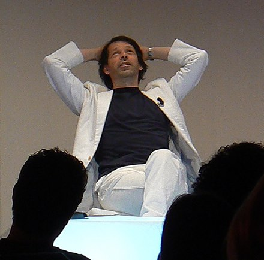

He studied graphic design at Manchester Saville became involved in the music scene after meeting Tony Wilson.

Peter Seville
Graphic designer
"Malcolm had a copy of Herbert Spencer's Pioneers of Modern Typography. The one chapter that he hadn't reinterpreted in his own work was, "New Typography".